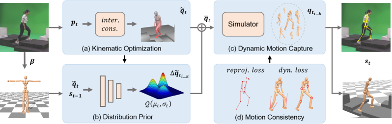

IEEE/CVF Conference on Computer Vision and Pattern Recognition (CVPR), 2022
Neural MoCon: Neural Motion Control for Physically Plausible Human Motion Capture

Overview of the proposed two-branch structure.
Our method first estimates reference motion with accurate human-scene interaction as well as human shape from a monocular RGB video (a). Then, a prior regresses a distribution from the state of physical character and the reference pose to sample target poses (b). The physics simulator is used to obtain a physically plausible pose for each sample (c). The sample with the lowest loss is adopted and used for the next frame after sample evaluation (d). Abstract
Due to the visual ambiguity, purely kinematic formulations on monocular human motion capture are often physically incorrect, biomechanically implausible, and can not reconstruct accurate interactions. In this work, we focus on exploiting the high-precision and non-differentiable physics simulator to incorporate dynamical constraints in motion capture. Our key-idea is to use real physical supervisions to train a target pose distribution prior for sampling-based motion control to capture physically plausible human motion. To obtain accurate reference motion with terrain interactions for the sampling, we first introduce an interaction constraint based on SDF (Signed Distance Field) to enforce appropriate ground contact modeling. We then design a novel two-branch decoder to avoid stochastic error from pseudo ground-truth and train a distribution prior with the non-differentiable physics simulator. Finally, we regress the sampling distribution from the current state of the physical character with the trained prior and sample satisfied target poses to track the estimated reference motion. Qualitative and quantitative results show that we can obtain physically plausible human motion with complex terrain interactions, human shape variations, and diverse behaviors.
Results
Results on Human3.6M (row 1-2), 3DOH (row 3-4) and GPA (row 5-6) dataset.
Materials
|
Related links
|
|
Reference
Buzhen Huang, Liang Pan, Yuan Yang, Jingyi Ju and Yangang Wang. "Neural MoCon: Neural Motion Control for Physically Plausible Human Motion Capture". IEEE/CVF Conference on Computer Vision and Pattern Recognition, (CVPR), 2022.
Acknowledgments: This work was supported in part by the National Key R&D Program of China under Grant 2018YFB1403900, the National Natural Science Foundation of China (No. 62076061), the ``Young Elite Scientists Sponsorship Program by CAST" (No. YES20200025), and the ``Zhishan Young Scholar" Program of Southeast University (No. 2242021R41083).